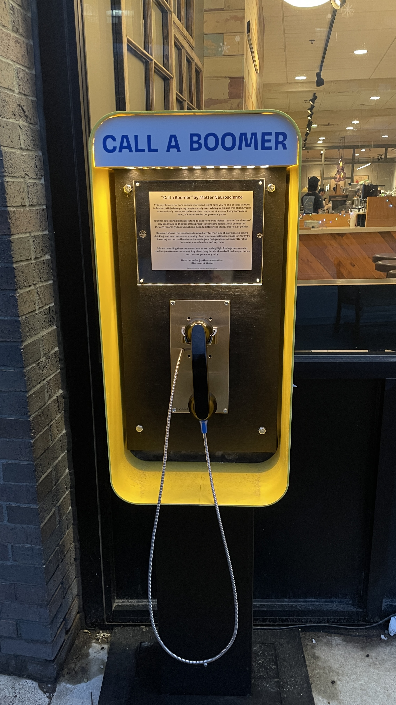

Call a boomer
April 30, 2026

On the intersection between Commonwealth Avenue and St. Mary’s Street sits Pavement Coffeehouse. More than two years ago, I used to frequent this spot. I was attending a summer camp in the area, and it was where I often got breakfast for the weekend. After leaving camp, I never thought I’d be in Boston again, until I got into MIT.
But even then, I didn’t think I’d visit this coffeeshop, let alone this Pavement Coffeehouse ever again. While it left fond memories, it was out of the way from MIT’s campus.
On a call with my mother, she told me about the installment of a payphone outside this very cafe; established by Matter Neuroscience, the goal of this project is to connect the boomer generation (ranging from 62–80 years old) and zoomer generation (ranging from 14–29 years old) together. In this current era, the digital divide leaves many people feeling isolated. Matter Neuroscience is a group that aims to increase happiness across all generations — they believe that bridging this gap requires people to talk to and connect with one another.
Since the phone is on Boston University’s campus, it’s targeted toward college students — vaguely in the zoomer generation — and is wired to a nursing home. It’s hard to miss the installment: it sits in a bright yellow box labeled “CALL A BOOMER,” as if it were calling for you to slow down and pick up the phone. Payphones are a technology that is being left behind, which I think is symbolic of our generation feeling less connected; I really appreciated Matter Neuroscience’s choice of making users physically be at the site, rather than just calling with a mobile device, since it makes the action of calling more intentional.
Perhaps this next part only applies to me, but what I found especially cool is that the phone is connected to a care home in Reno, Nev. — my hometown. I didn’t think my city was very well-known: after all, when people think of Nevada (if they even do), they tend to think of Las Vegas, not Reno. Apparently, another variable (besides age) was political orientation: one liberal, the other conservative. The political spectrum has become much more polarized — perhaps as a consequence of the digital divide — and that’s another gap this project is trying to bridge.
When I went to call, it went to voicemail, but I’m still glad I went. This installation was only up for a month, and I didn’t know if they would continue the project. But besides that, I got to leave the MIT bubble a little since it was off campus. I thought the culture at Boston University was not much different: people seemed to be rushing to their next planned activity, and barely anyone stopped to look at the payphone. Nonetheless, I hope that by the time it was up, at least a few people slowed down and made time in their lives to reconnect with those who matter to them most.
I wrote this article originally for The Tech, a student newspaper group at MIT! You may read this post here.
✩₊˚.⋆☾⋆⁺₊✧
That is all, consider subscribing or